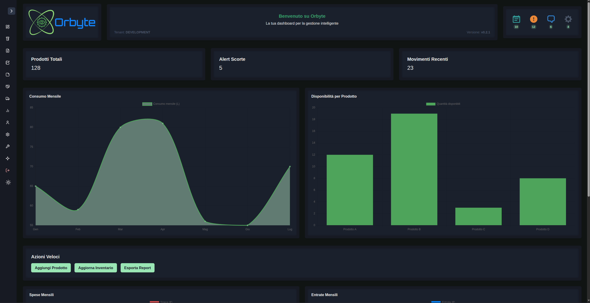
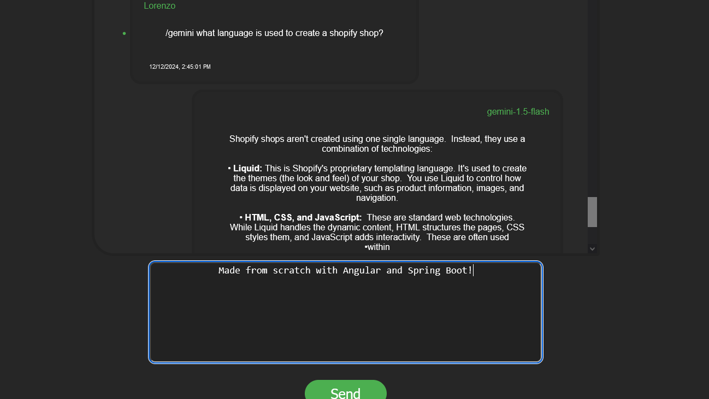

Benvenuto nel mio portfolio
Sono un professionista junior con un background ibrido unico, che unisce la cybersecurity governance strategica con lo sviluppo software full-stack pratico. La mia esperienza mi permette di costruire applicazioni non solo funzionali, ma anche sicure e conformi *by design*.
Oltre allo sviluppo di applicazioni cloud-native (Spring Boot, NodeJS, React), ho una forte competenza in ambito DevOps, automazione e intelligenza artificiale. Le mie aree di specializzazione includono:
- Gestione di pipeline CI/CD e deployment in cloud, utilizzando Docker per containerizzare e orchestrare i servizi in ambienti single-tenant.
- Automazione di workflow complessi tramite n8n e sviluppo di script e modelli AI opensource (usando PyTorch, Hugging Face) per l'ottimizzazione dei processi.
- Esperienza diretta in compliance ISO (27001) e regolamenti come GDPR e NIS2, applicando i principi di Security by Design.
Progetti Lavorativi
Architettura API Headless & Integrazione
In qualità di team leader tecnico, ho guidato la progettazione e lo sviluppo di un nuovo servizio headless per un cliente enterprise.
- Definizione dell'architettura software basata su microservizi con Spring Boot.
- Progettazione e implementazione di API REST sicure e performanti per l'integrazione con sistemi esterni.
- Impostazione completa delle pipeline DevOps (CI/CD) per automatizzare build, test e deploy.
- Applicazione rigorosa dei principi di sviluppo sicuro (Secure by Design) e best practice di coding.
- Gestione della sfida tecnica di un'integrazione stretta e complessa con un applicativo cloud React/NodeJS esistente.
Evoluzione e Gestione Applicativo Cloud
Inserito nel team di sviluppo di un applicativo aziendale SaaS basato su NodeJS e React.
- Attività avanzata di QA e troubleshooting per identificare e risolvere bug complessi in produzione.
- Contributo attivo allo sviluppo di nuove features, dal backend NodeJS fino al frontend React.
- Esecuzione di attività di refactoring del codice per migliorare la manutenibilità e le performance.
- Gestione in autonomia dell'intero ciclo di deployment in ambiente cloud.
- Configurazione e manutenzione dei container Docker in un'architettura single-tenant per garantire l'isolamento dei clienti.
Progetti Personali
ERP Multi-Tenant

Una piattaforma SaaS/ERP multi-tenant completa per la gestione dell'inventario, sviluppata interamente da solo e architettata end-to-end, coprendo l'intero ciclo di vita del software.
- Backend: Architettura multi-tenant (schema-per-tenant) in Spring Boot (gestione datasource routing basato su JWT) e un microservizio Flask per il provisioning automatico dei tenant e i backup.
- Data Layer: Utilizzata una strategia dati ibrida, integrando PostgreSQL (dati relazionali), Redis per la cache ad alte prestazioni e Neo4j per mappare relazioni complesse di inventario e supply chain.
- Frontend: Sviluppata una dashboard amministrativa responsive in React.
- DevOps & Monitoring: Containerizzati tutti i servizi (Docker) e configurato NGINX come reverse proxy. Implementato uno stack di osservabilità completo con Prometheus (metriche) e Grafana (dashboard).
- Funzionalità: Integrato MinIO (S3-like) per lo storage di documenti, Authentik per OIDC/SSO, e n8n per l'automazione dei workflow (AI Assistant).
AI Chat Webapp

Un'applicazione di chat full-stack che utilizza l'API Gemini di Google. Il backend è costruito con Spring Boot e un database SQL, servendo un frontend reattivo in Angular tramite una REST API. Include l'integrazione diretta dell'API GEMINI per risposte generative.
Game Engine Java
Un motore di gioco 2D per un clone di 'Block Breaker', costruito da zero in puro JAVA. Tutto il rendering, la fisica e la logica di gioco sono programmati su misura, utilizzando esclusivamente la libreria Graphics di base.